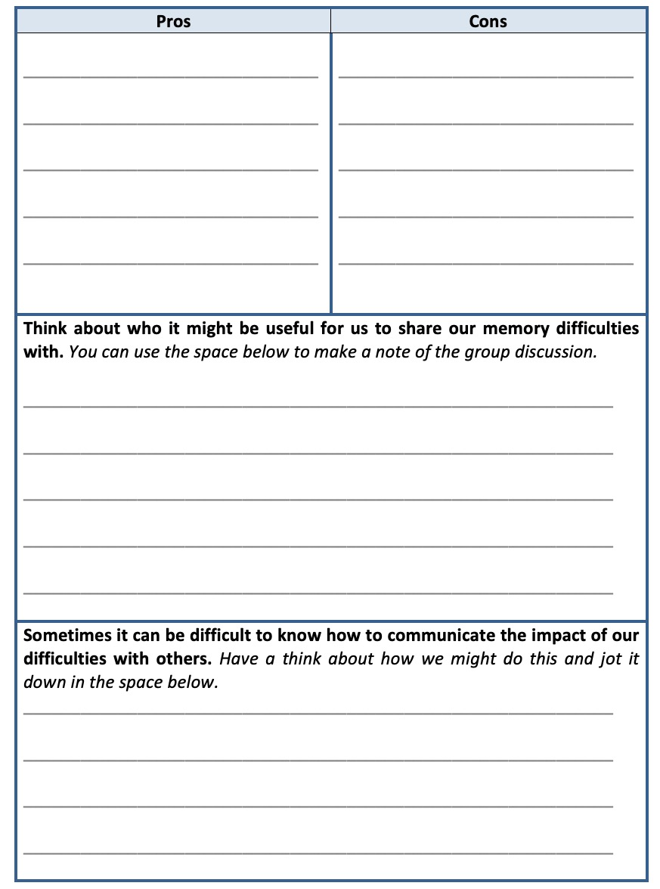
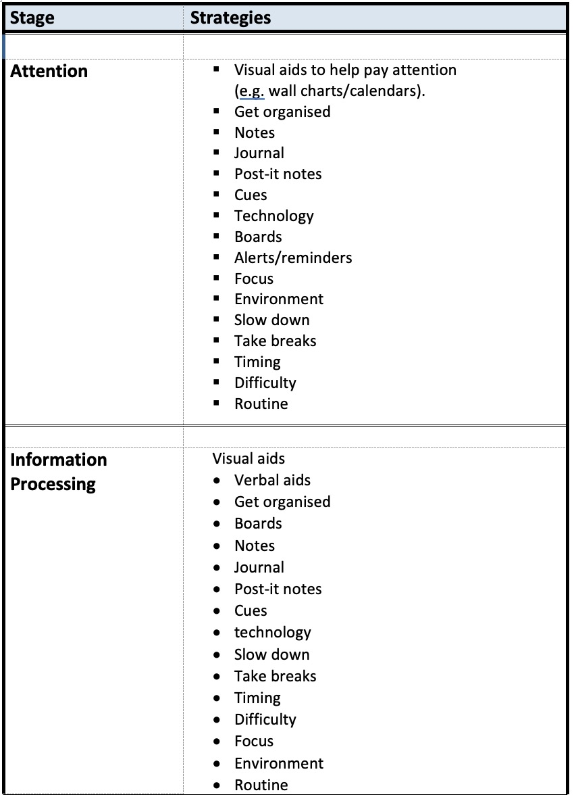
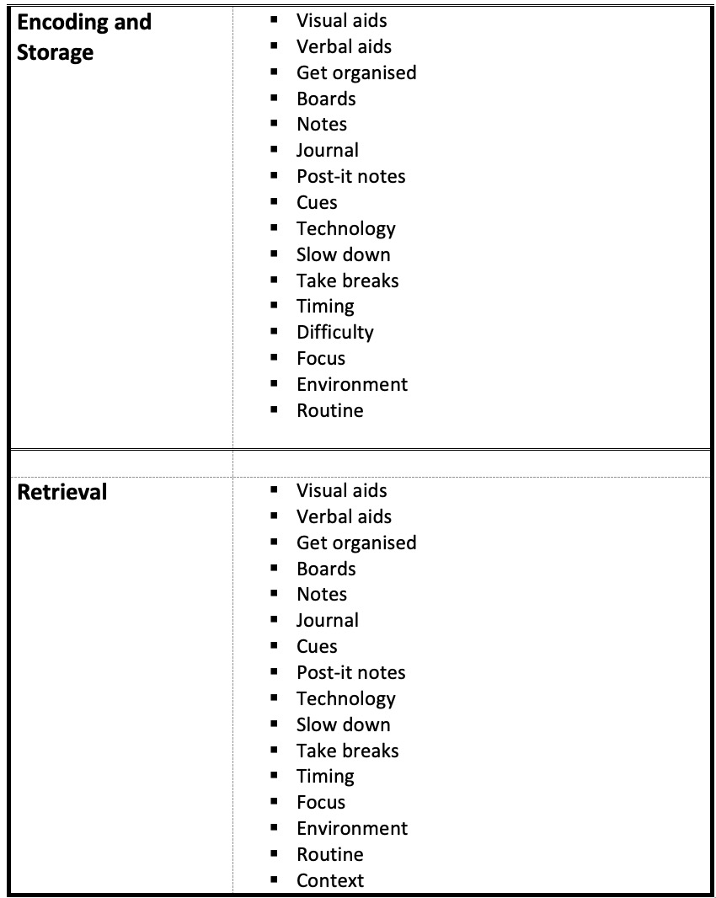
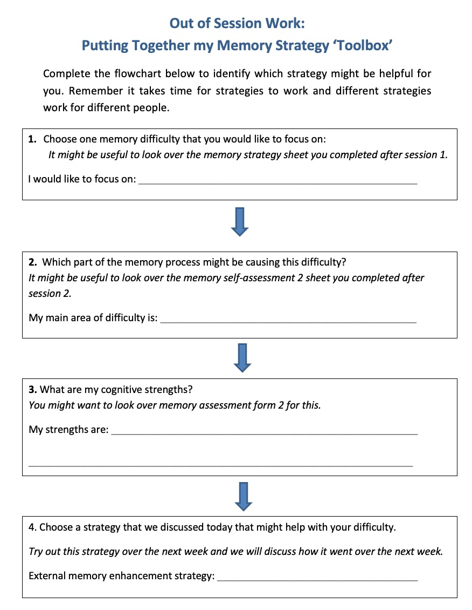

3 External Memory Strategies
3.1 Introduction
As we said in the last session, when you come into each session there may be lots of things on your mind. You might have thoughts about what you’ve been doing, what you need to do; maybe some expectations or perhaps worries about what the group itself will be like. Our minds often wander and life is sometimes filled with stresses or worries. To start off today, and at the beginning of our future sessions, we will carry out a brief mindfulness exercise. The aim of this is just to help us be more present ‘in the moment’, and give us some time to become more aware of our thoughts, feelings and any physical sensations. As we’ll see later in the course, this can also support our cognitive functioning and help our memory along with promoting overall well-being.
If you have difficulty focusing on the breath (e.g. due to breathing difficulties) then go at a pace that feels comfortable to you, stop the meditation or focus on another part of your body, such as your feet.
As we said in the last session, having memory difficulties can impact on our lives in lots of different ways, including our relationships, work, mood and general wellbeing.
A common problem for people with memory difficulties is thinking about whether and how we might tell other people about our difficulties. As a group, we will be thinking about the pros and cons of telling people about our memory difficulties and how this impacts on our lives.
If you want, you can use the table on the following page to jot down the pros and cons.
 ## What are External Strategies?
External strategies are used to help us compensate for difficulties with our memory. These strategies involve making external changes within our environment.
Visual aids
If you’re likely to remember things that you see, use pictures, drawings and photographs. These can help us to encode and store information into our memory as well as prompt our memory later on.
Verbal aids
If your memory is better for information that you hear it might be useful to use a Dictaphone to describe events of the day, record lectures or meetings or just to make a note of something important. This can also help us to encode and store information into our memory and that way if you forget you can listen back to the information to help to jog your memory. There is also computer software and audio versions of books which you can use to listen to information rather than relying on reading it.
Get organised!
Getting organised at home is very important for memory. There are lots of different aids that can help us become more organised. If used consistently these aids can make life much easier and puts less strain on your memory. Below are some examples:
- Folders/files: Make folders and files for important papers, bills, recipes etc. so they’re easier to locate.
- Sort it: everything should have its place. Sort drawers, cupboards, shelves etc.
- Label it: use labels on drawers, doors, cabinets, files, boxes etc. That way you and others in your house will find it easier to locate and put things away.
- Diary/Filofax: using a diary or Filofax can be helpful for remembering what you need to do.
- Charts/calendars: Charts and calendars can also be useful for remembering what you need to do. Making these visible around the house is also useful because it helps us to pay attention to them.
Boards
Hanging boards, blackboards or bulletin boards can be helpful for remembering information. These can be strategically placed around the house for remembering information (e.g. in the hallway or on the fridge). You could use this for to do lists, shopping lists, for events or simply to jot down important information. ### Notes
Take notes of what you need to remember but try to keep it in one place (i.e. a note pad) so you remember to look. You might want to keep a daily list of what need to remember. It’s important to write enough that you understand what you need to remember but not too much that it becomes overwhelming and counter-productive. We will demonstrate this later on.
Journal
A journal can be useful for reflecting back on your day or checking what you did during the day later on if you’re unsure.
Post it notes
Leave post it notes to remind you of things in places that you know you’ll look. For example, you might want to remind yourself to lock the door when you come in at night by putting a post it note next to the door.
Cues
Leaving cues around the house or in other places can also help to jog your memory. For example, if you leave your notebook by the kettle you might be more likely to pick it up in the morning.
To do lists
It might be worth creating a daily ‘to do’ list of things you need to do. You can add to this throughout the day and tick off when each task has been completed.
 ### Environment
### Environment
Try to eliminate background noise as much as possible to reduce distraction. Turn off the TV or radio and close doors if people are talking. Getting rid of clutter can help to reduce visual distraction. This will help you to have more focused rather than divided attention.
Technology
With technology continuously changing, new memory aids are constantly developing. Below are some examples of these:
- Location detection devices: These can be useful if you if you misplace/forget where important things are. They can be attached to keys or other important devices and make a loud sound to help you find it. Mobile phones can also be linked to family and friends so they know your whereabouts if you’re worried getting lost
- Tablets/computers: Also have similar functions to smart phones but are slightly bigger. You can ‘sync’ your devices (share your information and apps between your phone/computer/tablet). This can be useful if other people need access to your information or you use more than one device for different things (e.g. at work, home or when you’re out).
- Satellite Navigation (SATNAV): Can be used if you have difficulty remembering routes. Navigation systems are also available on phones and tablets.
- Phones: Phones have a number of useful features including calendars, alarms and reminders. Smart phones have a number of additional apps and features that can be helpful for remembering information. This includes budgeting tools and notes pages for writing lists. Some phones even have ‘memory aid apps’ which incorporate lots of different strategies to help your memory.
Difficulty
When learning something new you should try to pace yourself and start off with simple tasks, gradually increasing their difficulty and length of time spent on the task. This will also help to gradually train your attention.
Timing
Are you a morning person or do you function better later in the day? Try to schedule activities which put higher demands on your attention and memory for the time of day when you perform the best.
Slow down
When doing new things or tasks that you know will put high demands on you plan ahead and take your time. For example, if people are talking too quickly or if you don’t understand something ask them to slow down or repeat the information.
Breaks
Ensure that you take regular breaks when learning something new. This will help to take the pressure off your concentration and minimise tiredness and frustration caused by overexerting yourself. It’s also useful to give yourself rewards to look forward to.
Routine
Maintaining a good routine is very important for memory. This is because when something becomes part of our routine it put less pressure on our memory and becomes part of our procedural memory (our long term memory of how to perform different actions or skills). These types of memories are so ingrained they usually become automatic which is why they put less pressure on other types of memory or our attention.
Context
Sometimes it’s easier to retrieve information if we’re in the same place, situation or mood we were in when we learned that information. If you’re having trouble remembering something it might be worth going back to the place or situation you encoded it.
Creating my memory ‘tool box’
It’s useful to start off by making a plan of which strategies would be useful for you and when you aim to start implementing each strategy. Try to focus on one strategy at a time. Remember that it takes time for strategies work and become part of our routine so try to be patient and stick with the strategies even if you feel they’re not working straight away.
3.2 How do I Know which Strategies will be the Most Useful for Me?
When deciding which strategies are the most useful for you, ask yourself questions about what exactly the problem is.
Do I have a specific difficulty with my memory?
Think about whether there’s a specific difficulty with your memory. For example, is it that you’re forgetting what you need to do? Are you forgetting names? Are you having difficulty recognising faces? Then focus your strategies on these difficulties.
Do I remember information better when I see or hear things?
If you’re better at remembering visual information, try to incorporate as many visual aids into your plan such as pictures, diagrams or photos. If you’re better at remembering verbal information use verbal aids such as saying things out loud or using a Dictaphone.
Do I forget things shortly after they’ve happened or after an extended period of time?
If you’re likely to forget things straight away, use the strategies immediately. E.g. put things in your diary straight away, write your lists straight away etc. If you’re likely to forget things over an extended period of time think ahead! Take photos, write things down important information etc.
Are you having a specific difficulty during the process of learning?
Think about the process of learning new information (see session 2) and try to identify where you’re having difficulty. Is it that you’re getting distracted and not paying attention? Do you feel as though you’ve slowed down a bit? Are you having trouble encoding, storing or retrieving the information? Try to focus your strategies on the different stages of this process. For example, if you’re having difficulty with your attention try to focus on one task at a time, clear external clutter and take regular breaks. See the table below for more information on this.
3.3 Other useful tips
- Try to incorporate the strategies into your routine. That way you won’t be relying so much on remembering and it will become part of your procedural memory (your automatic memory for doing things).
- Incorporating strategies into your life and routine can take time. Give yourself time to adjust!
- Don’t try to do too much at once. When implementing new strategies try to do one at a time. That way you’re more likely to remember and incorporate it into your routine.
- Keep track of your progress. Keep a diary of all the strategies you’re implementing and monitor your progress over a month or a week. That way you can also review whether those strategies are working for you.


How can I effectively utilise external memory aids?
It’s important that we use our memory aids effectively in order for them to work. There are some examples of effective and ineffective use of strategies on the next couple of pages. Here are some tips for utilising external memory enhancement strategies effectively:
- Keep it simple. Focus on the main bits that you need to remember.
- Don’t write too much or too little. It’s important to write just enough to help jog your memory later on.
- Don’t overload your mind with visual and verbal information because when you read over it will be too overwhelming for your mind to take it in and visualise later on.
- Use visual and verbal aids wherever possible to aid memory.
- Organise your notes on the page so it’s easy to visualise later on.
3.4 Out of Session Work
Implementing my External Memory Enhancement Strategy
Between now and the next session we would like you to start implementing the strategy that you have chosen. It’s important to remember that it takes time for strategies to start working so we should try not to have expectations about the effectiveness of the strategy.
